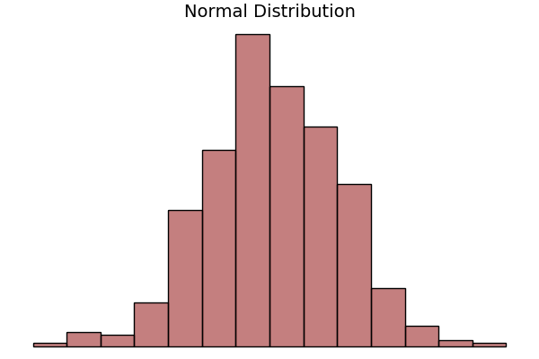
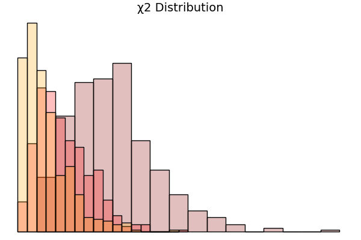
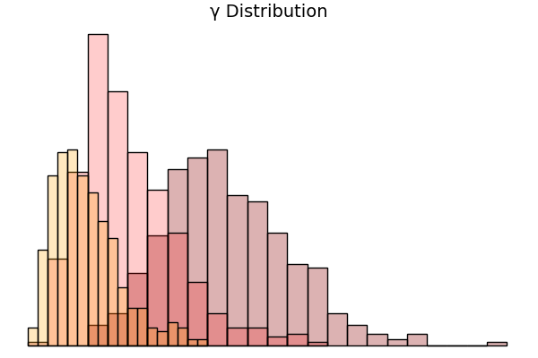
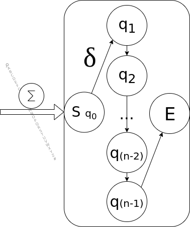
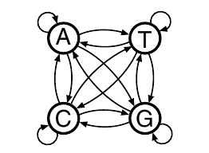
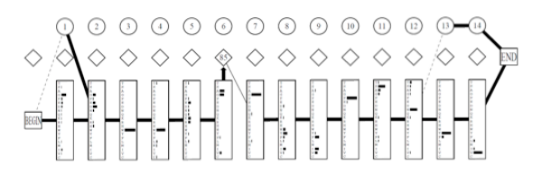

What is a Probability?
important properties: Joint Probability, Marginal Probability
given i.i.d.
Example Distributions
Example Distributions
Example Distributions
The Finite State Automaton
The Finite State Automaton
I this a Markov Model already?
The First Model
Markov Chain over states: X
every state has emissions: e
every state has transitions: a
such that,
The First Model
Given a Sequence with Transition Probabilities:
A Complex Model
Now that we have a Model - what?
Remember: we want something that
Training a model:
Maximum Likelihood (ML)
Maximum aposteriori estimation (MAP)
Finding a Path
Finding a Path
Viterbi
Forward Backward
Finding a Path
Viterbi
Finding a path
Finding a Path
Viterbi
Finding a Path
Viterbi
recursive formulation for sequence of length L:
Finding a Path
Forward Backward
Finding a path
Finding a Path
Forward Backward
recursive formulation for sequence of length L: